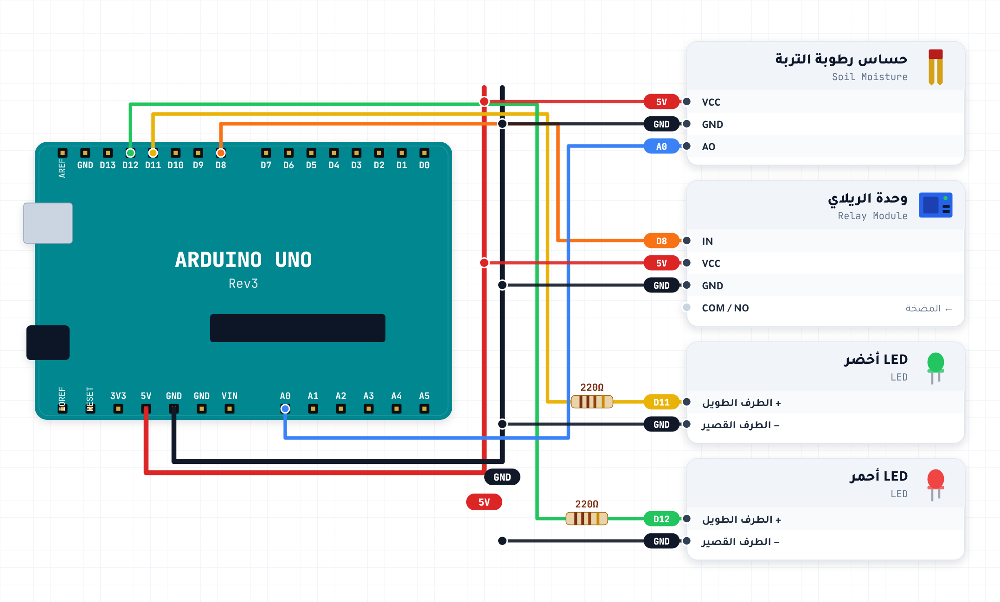

▶فيديو الشرح
حساس رطوبة التربة يقرر متى تحتاج النبتة إلى الماء فيشغّل المضخة ويوقفها تلقائياً.
1المكونات
ARDUINO UNOboardحساس رطوبة التربةSoil Moistureوحدة الريلايRelay ModuleLED أخضرLEDLED أحمرLEDأسلاك توصيلJumper Wiresلوحة تجاربBreadboard
2مخطط التوصيل

اضغط على المخطط لتكبيره · نسخة SVG عالية الدقة
| القطعة | الطرف | يوصل إلى |
|---|---|---|
| حساس رطوبة التربة | VCC | 5V |
| حساس رطوبة التربة | GND | GND |
| حساس رطوبة التربة | AO | A0 |
| وحدة الريلاي | IN | D8 |
| وحدة الريلاي | VCC | 5V |
| وحدة الريلاي | GND | GND |
| وحدة الريلاي | COM / NO | المضخة |
| LED أخضر | + الطرف الطويل | D11 عبر مقاومة 220Ω |
| LED أخضر | − الطرف القصير | GND |
| LED أحمر | + الطرف الطويل | D12 عبر مقاومة 220Ω |
| LED أحمر | − الطرف القصير | GND |
3الكود
لا يحتاج هذا المشروع إلى أي مكتبة إضافية.
/* المستوى المتوسط — المشروع 4: نظام ري النباتات الآلي كتاب: 38 مشروع في شهر — لؤي النصري (@robotlouay) التوصيل: حساس رطوبة التربة: VCC → 5V GND → GND AO → A0 الريلاي: VCC → 5V GND → GND IN → Pin 8 المضخة: موجب مصدر الطاقة → COM ، NO → موجب المضخة ، سالب المضخة → سالب المصدر LED أخضر ← 220Ω ← Pin 11 LED أحمر ← 220Ω ← Pin 12 القيم: تربة جافة ≈ 800–1023 ، تربة رطبة ≈ 300–500 (افحصها في Serial Monitor) */ const int SOIL_PIN = A0; const int RELAY_PIN = 8; const int GREEN_LED = 11; const int RED_LED = 12; const int DRY_LEVEL = 700; // أعلى من هذه القيمة = تربة جافة → ري const int WET_LEVEL = 500; // أقل من هذه القيمة = رطوبة كافية → إيقاف const unsigned long MAX_PUMP_MS = 10000; // مؤقت أمان: 10 ثوانٍ كحد أقصى bool pumping = false; bool fault = false; unsigned long pumpStart = 0; void pump(bool on) { digitalWrite(RELAY_PIN, on ? HIGH : LOW); pumping = on; if (on) pumpStart = millis(); } void setup() { Serial.begin(9600); pinMode(RELAY_PIN, OUTPUT); pinMode(GREEN_LED, OUTPUT); pinMode(RED_LED, OUTPUT); pump(false); } void loop() { if (fault) { // وضع الأمان: وميض أحمر حتى إعادة التشغيل digitalWrite(RED_LED, !digitalRead(RED_LED)); delay(300); return; } int soil = analogRead(SOIL_PIN); Serial.print("Soil: "); Serial.println(soil); if (!pumping && soil > DRY_LEVEL) pump(true); // جفاف → تشغيل المضخة if (pumping && soil < WET_LEVEL) pump(false); // عادت الرطوبة → إيقاف if (pumping && millis() - pumpStart > MAX_PUMP_MS) { // المضخة تعمل بلا نتيجة pump(false); fault = true; Serial.println("FAULT: check water tank / sensor"); } digitalWrite(GREEN_LED, soil <= DRY_LEVEL ? HIGH : LOW); digitalWrite(RED_LED, pumping ? HIGH : LOW); delay(500); }
4كيف يعمل؟
- قراءة رطوبة التربة من A0
- تربة جافة → الريلاي يشغّل المضخة
- عادت الرطوبة → إيقاف
- مؤقت أمان 10 ثوانٍ يحمي المضخة
⚠ قبل توصيل الكهرباء: راجع كل سلك مع الجدول أعلاه، وتأكد من عدم وجود تماس بين 5V و GND. اختر اللوحة والمنفذ الصحيحين من قائمة Tools في Arduino IDE.